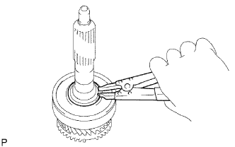
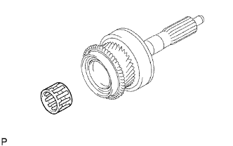
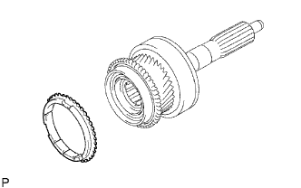

ПЕРВИЧНЫЙ ВАЛ > ПОВТОРНАЯ СБОРКА |
| 1. УСТАНОВИТЕ ПЕРЕДНИЙ ПОДШИПНИК ПЕРВИЧНОГО ВАЛА |
 |
С помощью SST и пресса установите новый передний подшипник на первичный вал.
| 2. УСТАНОВИТЕ ПРУЖИННОЕ СТОПОРНОЕ КОЛЬЦО ВАЛА ПЕРЕДНЕГО ПОДШИПНИКА |
Выберите пружинное стопорное кольцо, которое обеспечивает необходимый зазор между первичным валом и передним подшипником.
| Метка | Толщина |
| А | 2,10 - 2,15 мм (0,0827 - 0,0846 дюйма) |
| B | 2,15 - 2,20 мм (0,0846 - 0,0866 дюйма) |
| C | 2,20 - 2,25 мм (0,0866 - 0,0886 дюйма) |
| D | 2,25 - 2,30 мм (0,0886 - 0,0906 дюйма) |
| E | 2,30 - 2,35 мм (0,0906 - 0,0925 дюйма) |
| F | 2,35 - 2,40 мм (0,0925 - 0,0945 дюйма) |
| G | 2,40 - 2,45 мм (0,0945 - 0,0965 дюйма) |
|  |
С помощью съемника стопорных колец установите пружинное стопорное кольцо.
| 3. УСТАНОВИТЕ ПОДШИПНИК ПЕРВИЧНОГО ВАЛА |
|  |
Нанесите трансмиссионное масло на подшипник первичного вала и установите его на первичный вал.
| 4. УСТАНОВИТЕ БЛОКИРУЮЩЕЕ КОЛЬЦО СИНХРОНИЗАТОРА № 2 |
|  |
Нанесите на блокирующее кольцо синхронизатора № 2 трансмиссионное масло и установите его на первичный вал.